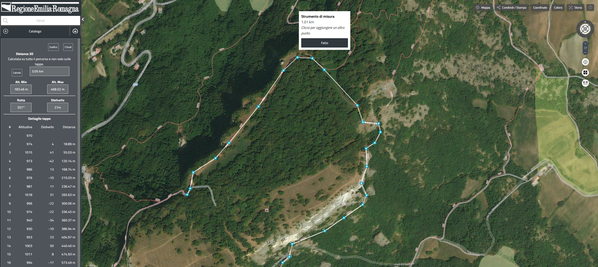

rer3d-map è dotato di uno strumento di misura tramite cui è possibile misurare distanze e superfici.
Lo strumento di misura si attiva (o disattiva) cliccando sul bottone
Una volta attivato lo strumento di misura, cliccare sulla mappa per posizionare i vertici (o tappe) che definiscono la linea spezzata di cui misurare la lunghezza. Man mano che si posizionano i vertici, sulla mappa viene disegnata la linea spezzata e viene aggiornata la lunghezza corrente.
Rimane sempre possibile cambiare il livello di zoom o spostare la mappa tramite drag&drop (prendi e trascina) per posizionarsi in modo opportuno.
Cliccando su un vertice già posizionato, questo viene rimosso; se invece lo si prende e trascina (drag&drop) verrà cambiata la sua posizione.
Posizionando l'ultimo vertice sopra il primo, la linea spezzata viene chiusa e viene definito automaticamente un poligono, di cui viene misurata la superficie.
Dal momento in cui viene posizionato il secondo vertice della linea spezzata, questa viene considerata, oltre che in funzione della misura, anche come percorso.
A sinistra della mappa si apre un pannello con i dati del percorso:
I dati dei punti 1. e 2. vanno calcolati esplicitamente cliccando sul bottone Calcola campionando in modo automatico a intervalli regolari e molto fitti il perocrso in modo da trarne l'altitudine e la lunghezza non solo nelle tappe (di conseguenza la distanza calcolata in questo modo è sempre maggiore o uguali a quella calcolata usando solo le tappe).
Nel pannello dei percorsi è presente il bottone Grafico che mostra (o nasconde) il pannello dei grafici del percorso.
I grafici sono di due tipi e vengono sovrapposti: quello bianco ("altitudine") rappresenta le tappe (i vertici) del percorso attuale, quello blu ("altitudine dettaglio") invece rappresenta il campionamento del percorso generato con il bottone Calcola.
Per entrambi i grafici sulle ascisse abbiamo la distanza del punto dall'inizio del percorso e sulle ordinate abbiamo l'altitudie del punto.
Può capitare che il dato di dettaglio (quello blu) copra una maggior distanza rispetto a quello bianco, poichè più realisticamente considera l'andamento del terreno anche fra una tappa e l'altra (mentre quello bianco rappresenta solo le tappe).
Il pannello dei grafici si aggiorna automaticamente quando sulla mappa viene modificata la linea spezzata del percorso.
Nel pannello dei grafici è presente il bottone Download grazie al quale è possibile esportare i dati del percorso corrente in GeoJSON, CSV o KML.
L'esportazione consiste nel salvare sul pc o device dell'utente uno o più file del formato scelto tra quelli disponibili. Questi file potranno poi essere usati in qualsiasi software GIS (ad esempio QGIS) o essere reimportati in rer3d-map (vedi sotto).
L'esportazione in CSV salva un file elevation_step.csv con i dati delle tappe e, se è stato
calcolato il dettaglio altimetrico (bottone Calcola), salva due file aggiuntivi:
elevation_detail.csv con i dati del percorso campionato e elevation_resume.csv con i
dati riassuntivi del percorso (altitudine minima e massima, rotta, ecc.). I percorsi esportati in CSV saranno
caricati dai GIS come layer di punti.
L'esportazione in GeoJSON salva un file elevation_step.geojson con i dati delle tappe e, se è
stato calcolato il dettaglio altimetrico, un file elevation_detail.geojson con i dati del
percorso campionato; i dati riassuntivi del percorso sono presenti all'interno di entrambi i file. I percorsi
esportati in GeoJSON saranno caricati dai GIS come layer di linee.
L'esportazione in KML salva un file elevation_step.kml con i dati delle tappe e, se è stato
calcolato il dettaglio altimetrico, un file elevation_detail.kml con i dati del percorso
campionato. I percorsi esportati in KML saranno caricati dai GIS come layer di linee.
È possibile, in certe condizioni, importare un percorso da un layer caricato in rer3d-map.
Perchè sia possibile importare un percorso è necessario che il layer contenga una sola geometria di tipo lineare (attualmente non è possibile importare poligoni e non è possibile scegliere una geometria fra tante, deve essercene solo una presente nel layer); quando questo prerequisito è rispettato, il layer in questione è dotato nell'interfaccia di un bottone in più: Misura percorso
Cliccando su Misura percorso dai dati dell'unica geometria del layer viene prodotto e caricato il percorso, di cui sono visibili i dati ed i grafici.
Se il percorso importato ha valori altitudine, sono usati quelli, altrimenti sono letti dal modello del terreno di rer3d-map.